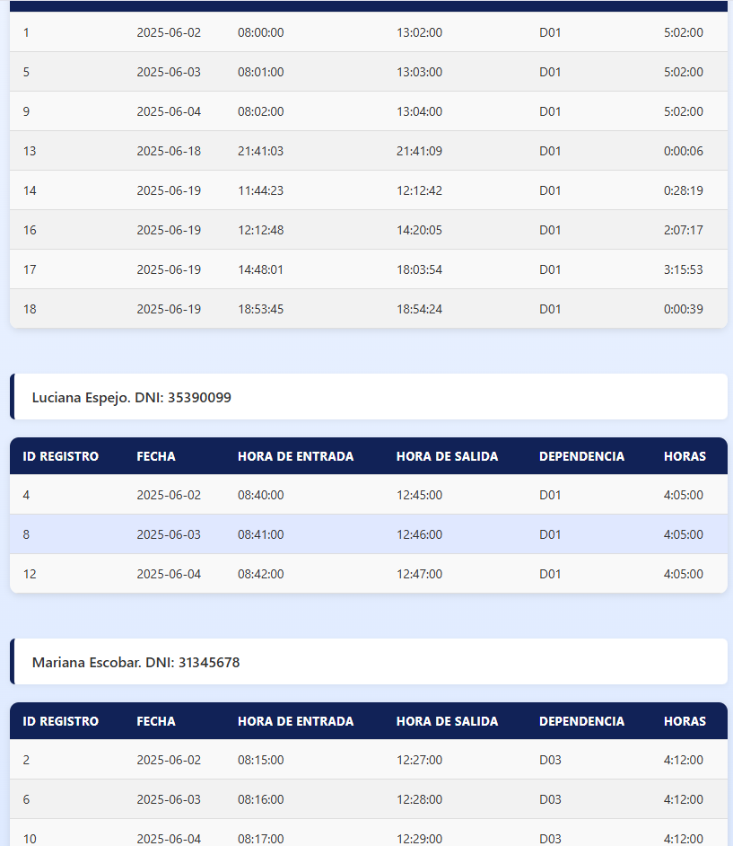

Estudiante de Ciencias de la Computación apasionado por crear experiencias digitales únicas y funcionales, apasionado por las matemáticas aplicadas a la computación y la aplicación de la tecnología en el mundo para la solución de problemas.
Este es mi espacio personal donde comparto quién soy, qué me apasiona y algunos de mis proyectos favoritos.
Soy un estudiante de 2do año de Licenciatura en Ciencias de la Computación en la Facultad de Ciencias Exactas, Físicas y Naturales con una fuerte curiosidad por la informática. Desde que escribí mi primera línea de código, me cautivó la solución de problemas
Actualmente me enfoco en Python para la inteligencia artificial, ingeniería de datos y backend explorando frameworks como React y para el front-end.
Fuera del código, me apasiona el arte digital y la fotografía, lo que aporta un toque creativo a mi trabajo como desarrollador.
🎨
Aplicación web para gestionar las entradas y salidas de trabajadores de sus establecmientos. Desarrollada con Python, Flask.

♻️
App de generación y visualización de fractales de Mandelbrot. Desarrollada con Python, PIL.
✅
App que consume una API de nutrición y muestra datos de alimentos. Desarrollada con React y Express.
🌦️
App que consume una API de clima y muestra animaciones SVG en tiempo real.
¿Quieres colaborar en un proyecto o simplemente saludar?
"Juanjo tiene una gran capacidad para resolver problemas complejos con soluciones simples y elegantes. Fue clave en el rediseño de nuestra landing page."
— María López, Project Manager en TechWave
"Siempre está dispuesto a aprender algo nuevo y aportar ideas creativas. Su código es limpio, bien estructurado y fácil de mantener."
— Julián Torres, Senior Developer en CodeLab
"Trabajar con Juanjo fue una experiencia excelente, cumplió con los plazos y superó las expectativas con un diseño moderno y funcional."
— Carolina Méndez, CEO de EcoStart